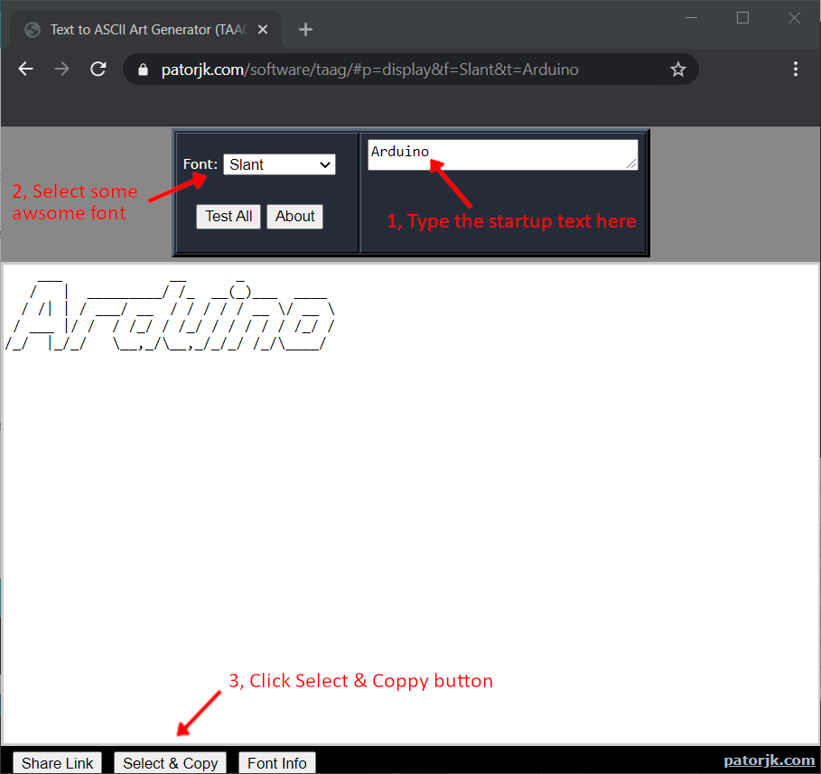

|
Shellminator
V0.2A
Shellminator is a simplified VT100 compatible iinterface for c++ projects
|
|
Shellminator
V0.2A
Shellminator is a simplified VT100 compatible iinterface for c++ projects
|
1.
The first thing you have to do is to include the library at the begining of your program.
Code:
2.
After you included the library you have to create an object of it. Usually it has to be made before setup().
Code:
The code above creates an object called shell and gives it Serial as a communication channel.
3.
In the setup function you have to initialise the Serial object that you have passed to shell.
Code:
In this example the Serial is configured with 115200 baudratem, but you can change it.
4.
After you initialised the serial port, it is very handy to clear the terminal. In my opinion it looks better, but this step is optional.
Code:
The clear command not deletes the content of the terminal, it just scrolls down to make it looks like that the terminal is empty. If you scroll up you will see the previus data.
5.
Now it is time to start the shell.
Code:
The begin function initializes the object, but you have to feed it with characters, it is not automatic. The only argument for begin is the banner text. This text can be your name, your companys name, your pets name, or simply empty( "" ).
6.
The last thing to do to make everything work is to put the update function in a periodic function. In Arduino environment the loop function is suitable for the job.
Code:
You have to update quick enough to make sure that the Serial buffer wont overflow. But calling too frequently wastes your CPU time.
This code can be found in the examples as Simple.ino.
Code:
1.
The first step is the most difficult. You have to came up with an idea what you want to see at startup.
2.
After you have came up with the startup text, go to this website.
3.

In this webpage you can generate all sorts of ASCII art. Just follow the steps in the image abowe.
4.
After you generated and copied the ASCII text art, go to this website.
5.

In this webpage you can generate a c/c++ like string from regular text. Just follow the steps in the image abowe.
6.
Paste the generated c/c++ string to your code like this:
The only problem with this string is that the line termination is only a "\n" character. We need to add a "\r" character before every "\n" character to make it pretty in the final result.
Code:
Example code in one peace:
In a real life application the execution function is the most important function in your shell subsystem. This functions job is to process the command that has been recived. Shellminator is just a terminal interface, it does not process any command, just pass it to the execution function. But it can be used as a glue between your terminal application and your interpreter( execution function ).
The shape of the execution function
The execution function is a void return type and has only one argument, and that argument is a char* type.
For example:
The name of the function and its argument can be anything, but the types has to match!
Also good example:
Adding an execution function to a Shellminator object is simple. You have two options for that.
1. Use the constructor:
2. Use a dedicated function:
This function can be used also when you have to change the execution function runtime.
Example

In the examples the Advanced.ino shows a basic implementation of a command parser. It not very efficient but if you have a small amount of commands and a simple project, it will be enough. You can easily modify it to add your costum commands.
There are some parameters that can be changed in the library.
1.
To make this changes first you have to open the Shellminator.hpp file. In the Arduino environment it can be located under your libraries\Shellminator folder. __The Arduino library folder usually located in '\Documents\Arduino\libraries\'.__ You will need a good text editor for this. I can recommend Atom or Notepad++ for example.
2.
After you opened the header file, in the begining of the file you can find a section like this:
This is the section of the header that can modify the default configuration. You can see the default values for every parameter. If you want to change any of them, just uncomment it, and give it a value! For example:
The modification above expands the history to 9 element.
If you want to highlight something or just make your messages pretty this can be a useful function.
Code:
Available styles: REGULAR, BOLD, LOW_INTENSITY, ITALIC, UNDERLINE, BLINKING, REVERSE, BACKGROUND, INVISIBLE
Available colors: BLACK, RED, GREEN, YELLOW, BLUE, MAGENTA, CYAN, WHITE